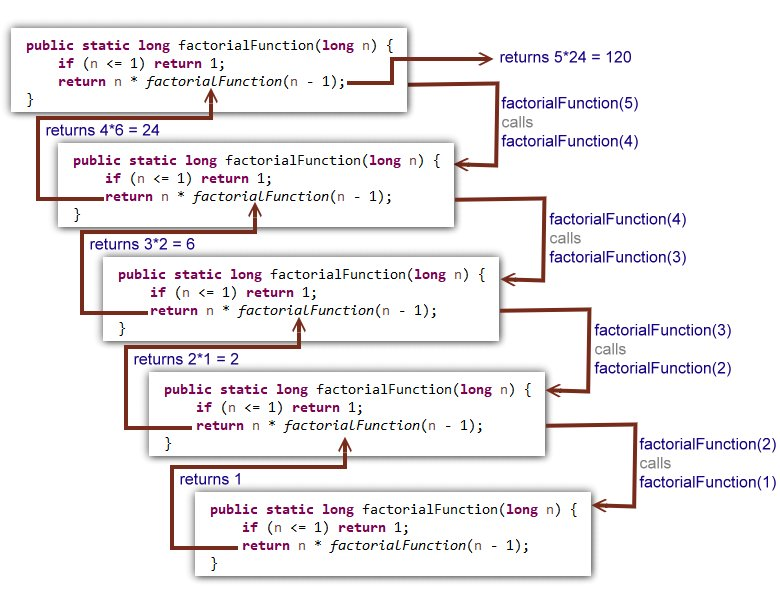

Recursion.
What is recursion?
Recursion is a programming technique where a function calls itself to solve a problem.
It is a powerful tool that can simplify complex problems by breaking them down into
smaller, more manageable sub-problems. Recursion involves two key elements: the base
case and the recursive case. The base case is the simplest version of the problem that
can be solved without recursion. The recursive case is where the function calls itself
to solve a more complex version of the problem. There is also a common error called a
stack overflow error. This occurs when a program exhausts the amount of memory allocated
to its call stack, resulting in a "stack overflow". This can happen when there is
excessive recursion or when a function calls itself indefinitely (no base case).
Here is an example of a recursive function that calculates the factorial of a given number:
public static int factorial(int n) {
if (n == 0) {
return 1; // base case } else {
return n * factorial(n-1); // recursive case }
}
In this example, the base case is when n equals 0, and the function simply returns 1. The
recursive case is when n is greater than 0, and the function calls itself with n-1 as the
argument until it reaches the base case.
